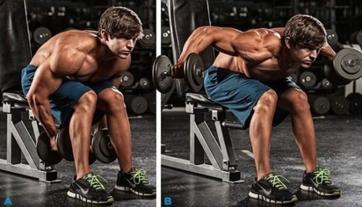

Gögüs Haraketleri
Bench Press
Bu hareketi uygulamak için bench sehpasına, kalçanız üzerinde ve ayaklarınız yere değecek pozisyonda uzanmanız gerekir. Ardından ağırlık barını kollarınızla kavrayarak kaldırmalısınız. Hareketten maksimum verim alabilmek için barı kaldırırken dikkat edilmesi gereken nokta kolların omuz genişliğinden biraz daha fazla açık olmasıdır.

Decline Press
Yere doğru 20 – 40 derece eğimli olan bench sehpasına ayaklarınızı destekleyici bölümlere takarak uzanın. Decline press hareketini uygularken kolların omuz genişliğinden biraz daha fazla açık olmasına dikkat edin. Ardından nefes vererek barı göğsünüze doğru indirin ve nefes alırken tekrar eski pozisyonuna getirin.
Dumbell Fly
Bu hareketi yaparken ayaklarınız yere değecek biçimde sehpaya kalçanız üzerinde uzandıktan sonra kollarınızla ağırlığı kavrayın. Ağırlıkları kaldırırken bu egzersizden verim alabilmek için dirseklerin bükülü olmasına dikkat edin. Nefes alarak dambılları omuz hizasına kadar gelene kadar indirin. Ardından vücudunuza 90 derecelik açı yapacak pozisyona getirin.
Push Ups
Dilimizde bilinen adıyla şınav çekme hareketi, doğru ve düzenli uygulandığında göğüs kaslarının gelişmesine yardımcı olur. Bu hareketi uygulamak için yüzü koyun pozisyonda elleriniz ve ayak uçlarınız yere değecek şekilde uzanın. Şınav çekerken kolların yere dikey pozisyonda olmasına dikkat edin. Ardından dirseklerinizi kırarak kendinizi aşağı çekin ve tekrar baştaki pozisyonunuza dönün.
Incline Bench Press
incline bench press hareketi: 45-60 derece aralığındaki eğimli bench sehpahasında, barbell’i yukarı itmek suretiyle yapılan, üst göğüs kaslarının gelişmesini sağlayan, etkili bir üst göğüs egzersizidir. Genellikle göğüs programında ilk sırada kullanılır. Bunun nedeni diğer göğüs hareketlerine göre daha fazla enerji harcamasıdır. İdmanın sonuna doğru yapmaya tercih ederseniz, enerjiniz düşeceğinden harekete gerekli yüklemeyi yapamazsınız.
Kol Haraketleri
Hammer Curls
Bu hareketi uygularken dik durmalı, dizlerini hafif bükmeli ve kollarını gergin tutmalısın. İki kol aynı anda ve bilekler sabit olacak şekilde, dumbelları omuz hizana kadar kaldır ve yavaşça indirerek başlangıç konumuna geri dön. Hareketin ritmine göre nefesini düzenle ve uygularken de sadece kol kaslarından güç almaya çalış. Biceps (ön kol) kasları için, bu hareketi 8 tekrardan 4 set yapabilirsin.
Barbell Curl
Bu harekeri düz veya Z bar ile uygulayabilirsin ve yaparken dikkat etmen gereken şey, hareket esnasında belinin sabit kaldığından emin olmak. Sadece kol kaslarından güç alarak dumbellı omuz hizana kadar kaldır ve yavaşça indir. (Kaldıramayacağın ağırlıklarla bu hareketi yapmaya çalışman, sakatlanmana neden olabilir!) Bu hareketi 8 tekrardan 3 set yapabilirsin.
Concentration Curl
Ayakta ya da oturarak yapabileceğin bu hareket zor ama kontrollü bir kaldırıştır. Spor uzmanları, yine de enerjinin tamamını harekete verebilmen için oturarak yapmanı öneriyorlar. Dirseklerini dizine daya, ağırlığı 2 saniyede kaldır ve 4 saniyede indir. Bu hareket biceps (ön kol) kasının tepe kısmına şekil vermeye yarıyor. Hareketi 8 tekrardan 3 set yapabilirsin.
Incline Dumbell Curl
Bu hareket, biceps kaslarının büyük bir bölümünü oluşturan uzun kısmını çalıştırır. Harekete başlarken oturacağın sehpanın eğimini ayarlaman gerekiyor. Eğim ne kadar az olursa, bicepsin uzun olan kısmı da o kadar çok esneme imkanı bulur. 30 derecelik bir eğim, bu hareket için idealdir. Sehpaya oturduktan sonra hareket boyunca kafanın sehpaya temas etmesi gerekiyor (Olası sakatlanmaların önüne geçmek için). Sehpadaki konumunu aldıktan sonra her iki eline almış olduğun dumbellları yukarıya doğru kaldır ve yavaşça indir. Bu hareketi 10 tekrardan 3 set yapabilirsin.
Dip
Hareket boyunca gövdenizi zemine karşı dik tutun ve her bir tekrarın üst kısmında dirseklerinizi kilitleyin.
Lying EZ-BAR Triceps Extension
Skull crusher da denilen bu triceps egzersizinde, dirseklerinizi fazla genişletmeden (dirseklerinizin son 2-3 tekrarda hafifçe genişlemesi kabul edilebilir) mümkün olan en yüksek ağırlıkla 10-12 tekrar yapın. Ağırlık barını alnınıza doğru yavaşça indirmeli ve yukarı kaldırmalısınız.
Triceps Pushup
Göğüs kaslarından daha çok triceps kaslarınızı çalıştırmak için yapmanız gereken aşağı doğru inerken dirseklerinizi yan taraflarınızda tutmaktır. Omuz kaslarınızda bir sorun yoksa yakın bir el duruşunu seçebilirsiniz.
Bacak Haraketleri
Squat
Squat hareketleri bacak egzersizleri söz konusu olduğunda ayrı bir öneme sahiptir. Bir squat rafında ya da kafesinde, barı rahat bir mesafeden tutun ve alt trapez kaslarınıza yerleştirin, kürek kemiğinizi sıkın, dirseklerinizi yukarı doğru itin ve barı raftan çıkarın. Bir iki adım kadar geri gidin ve ayaklarınızı omuz genişliğinde olacak şekilde durun, ayak parmaklarınız hafifçe dışa bakmalı. Derin bir nefes alın ve kalçanızı geriye doğru eğin, ardından belinizi geriye bükmeden vücudunuzu olabildiğince alçaltmak için dizlerinizi bükün. İnerken dizlerinizi dışarı doğru bastırın. Dizlerinizi dışarı doğru itmeye devam ederek kalçanızı yukarı kaldırın.
Deadlift
Bacak kasları için etkili olan bu hareketi uygularken ayaklarınız kalça genişliğinde olacak şekilde dik durun ve barı kaval kemiğinizden 3-4 cm uzakta olacak şekilde konumlandırın (2). Barı her iki elinizi de bükerek çift yönlü ya da ters kavrama ile kavrayın, dizlerinizi bükün ve düz olan kollarınızın arasına doğru itin. Deadlift yaparken göğsünüzü olabildiğince yukarı kaldırın ve tam karşıya bakın. Sırtınızı düz tutarak kalçalarınızı esnetin. Barı bacaklarınızı boyunca yukarı çekerek sabitleyin. Sonrasında dikkatli bir şekilde başlangıç pozisyonuna geri dönün.
Leg Press
Makinenin koltuğunu, kalçalarınız bacaklarınızın aşağısında ve bacaklarınız ayaklarınızla aynı hizada olacak şekilde rahatça oturmak üzere ayarlayın. Güvenlik engelini kaldırın ve 90 derece bükülene kadar dizlerinizi göğsünüze doğru indirin ve sonra tekrar yukarı doğru bastırın. Ağırlığı çok fazla alçaltmamaya dikkat edin ve sırtınızın koltuktan düşme riskini ortadan kaldırın. Olası sakatlıklardan kaçınmak için hareketi dikkatli bir şekilde uygulayın.
Walking Lunge
Ayaklarınız kalça genişliğinde olacak şekilde ayakta durun, her iki elinize birer dambıl alın. Bir bacağınızla öne doğru bir hamle yaparak ilerleyin ve arka diziniz neredeyse yere değene ve ön uyluğunuz yere paralel olana kadar vücudunuzu indirin. Bir sonraki tekrarı gerçekleştirmek için arka ayağınızla öne çıkınız. Sonrasında diğer bacağınızla hareketi tekrarlayın.
Sırt Haraketleri
Wide Grip Pull Up
Kanat hareketleri arasında gösterilen bu hareket sırt kaslarının geliştirilmesinde klasik barfiks hareketi olarakta anılabilir. Sırt kaslarını bu hareket ile geliştirmek için öncelikle asılacak olduğunuz barın yüksekliği en az bir kol mesafesinde olması gerekmektedir. Barı tutuğunuzda elleriniz bir omuz genişliğinde ya da daha açık olmalıdır. Sonrasında ise kollarınızla ve sırtınız ile çekmelisiniz. Burada nefes kontrolü çok önemlidir. Zamanla daha rahat yapmaya başlayacağınız bu egzersiz ile sırtınızın orta kısmında bulunan kas önce kuvvetlenir sonra da gelişmeye başlar.
Lat Pull Down
Bu makinenin mantığı barfiks çekerken kullanılan kanat ve sırt kaslarını çalıştırmaktır. Barfiks çekerken zorlanan kişilerin kaslarını geliştirebileceği makinelerden biridir. Kendi ağırlığını kaldırabilecek seviyeye gelen kişilerin barfiks çekmesi tavsiye edilir. Bu seviyenin üstüne çıkanların ise dizlerini makineye bağlamak suretiyle kendi ağırlığından fazlasını kaldırarak kanat ve sırt kaslarının çalıştırabilmesini sağlamaktadır.

Dumbell Row
Sırt kası geliştirilmesinde en önemli egzersizlerden bir diğeri de dambıl çalışma programı ile yapılan dambıl row hareketidir. Kolların sırasıyla kullanıldığı ve bir sehpadan destek alınarak yapılan harekettir. Bu hareket ile kürek kemiklerinin üzerindeki ve etrafındaki kaslar etkili şekilde çalıştırılır. Hareketin yapılışı için sağ kol ile başlandığını düşünürsek, düz şekilde ayarladığınız sehpaya sol dizinizi ve sol elinizi yaslayıp sağ elinizde dambıl ile sağ ayağınız yerde olacak şekilde harekete başlıyorsunuz. Dambıl karın boşluğuna kadar çekilerek dirsek tamamen kapatılır ve sırt kasları sıkıştırılır. Avuç içi vücuda bakacak şekilde olmasına ve ağırlığın dikey hareketi bozmadan yapılmasına dikkat edilmelidir.
Bent Over Row
Dambıl Row hareketine benzer şekilde yapılır. İki adet dambıl ile ya da halter çubuğu ve ağırlıkları ile yapılabilir. Hareketi yaparken dizler hafif kırık ve sırt 45 dereceden biraz fazla açıyla öne doğru vaziyet alınır. Kollar aşağıda ağırlıkları tutacak şekilde bel ve dizler sabit kalacak şekilde ağırlıklar karın boşluğuna doğru çekilir. Hareket halter çubuğu ile yapıldığında daha etkili sonuçlar verecektir. Belinde ve sırtında sorun olanlar için sehpa açısı ayarlandıktan sonra yüzüstü uzanılarak yapılması mümkündür. Sırt kaslarını iyi çalıştıran hareketlerdendir.
Omuz Haraketleri
Side Lateral Raise
Ayakta veya oturur pozisyonda, dambıl ile yana açış hareketidir. Omuz kaslarını geliştirme için iyi bir egzersiz dambıl ile yana açış egzersizidir. Hafif ağırlıklarla başlayın ve zaman içerisinde güçlendikçe daha ağır ağırlıklara doğru yönelin. Bu egzersizi gerçekleştirmek için her iki elinize de birer dambıl alın ve kollarınızı vücudunuzun yanlarına yerleştirin. Sonra, dambılları omuzlarınızla paralel olacak şekilde kaldırın. 6 ila 10 tekrardan oluşan üç set yapın.
Upright Row With a Wide Grip
Ayakta dik pozisyonda, barı geniş açıyla tutarak dikey biçimde omza doğru çekiş hareketidir. Barla dikey çekiş hareketi de daha geniş omuzlar için harika bir egzersizdir. Barı geniş açıyla tutarak dikey biçimde omzunuza doğru çekiş hareketi yaparak, kasları omuzlarınızın dış kenarlarında çalıştırabilirsiniz ve bu da omuzlarınızı genişletmenizi kolaylaştırabilir. Barla dikey çekiş hareketi gerçekleştirmek için öncelikle bir barı geniş açıyla kavrayın. Barı dikey biçimde göğüs hizasına doğru omuzlarınız sıkıştırına kadar çekin ve bırakın. Bir diğer seçenek ise dambıl kullanarak çekiş hareketi yapmaktır. Düz bir ağırlık sehpasına (bench) bir dizinizi ve aynı yöndeki elinizi yerleştirin. Sonrasında boşta kalan diğer elinizle dambılı kavrayın. Kavradığınız dambılı, dirseğiniz arkanıza denk gelene kadar çekin. Üç kez 6 ila 10 tekrar yapın veya daha fazla yapamayacak hale gelene kadar yapın.
Rear Deltoid Raise
Oturur pozisyonda öne eğilin ve dambıl ile arka yana doğru açış hareketidir.Omuzlarınızın genişliğini artırmak için dambılla arka yana doğru açış şeklinde yapılan arka omuz hareketini de deneyebilirsiniz. Dambılla arka yana doğru açış hareketini yapmak için, sırtınızı yere paralel olacak şekilde eğin. Her iki elinizi hafif makul bir ağırlıkta dambıl alın. Dambıllar çok ağır olmamalı, çünkü öyle bir durumda birkaç kezden daha fazla kaldıramazsınız. Ardından, dambılları sırtınızla neredeyse paralel olana kadar dışarı doğru kaldırın ve vücudunuzdan uzaklaştırın. 8 ila 10 tekrardan oluşan üç set yapın.
Front Deltoid Raise
Ayakta pozisyonda dambıl ile öne doğru açış hareketidir.Ayrıca, öne doğru açış şeklinde yapılan ön omuz egzersizi yaparak çalıştırabileceğiniz, omuzlarınızın ön kısmında yer alan deltoid kaslarınız da var. Ayakta pozisyonda, her iki elinize birer dambıl alın ayaklarınızı omuz genişliğinde açın. Elinizle vücudunuza yakın bir yerden başlayarak, dambılları yukarı ve vücudunuzun önüne doğru kaldırmaya başlayın. Dambılları omuz hizasına kadar kaldırdıktan sonra, yavaş yavaş dambılları başlangıç pozisyonuna geri indirin. 8 ila 10 tekrardan oluşan üç set yapın.
Dumbell Overhead Press
Ayakta veya oturur pozisyonda dambıl ile omuz hizasından baş üstüne doğru basış hareketidir. Omuz hizasından baş üstüne doğru basış hareketi de omuz genişletme ve onları daha hacimli göstermek için size yardımcı olacaktır. Her iki elinize birer dambıl alarak ayaklarınızı omuz genişliğinde açarak hareket pozisyonunu alın. Egzersizi yapmak için, dambılları omuz hizasından başınızın üstüne doğru düz bir şekilde itin ve sonra yavaşça geri indirin. 8 ila 10 tekrardan oluşan üç set yapın.